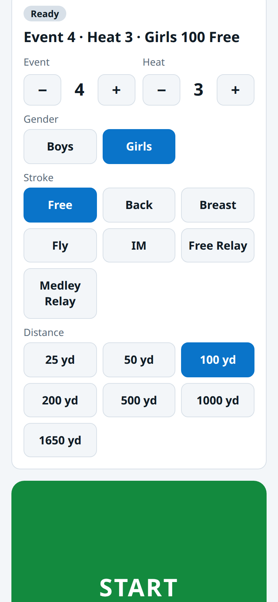
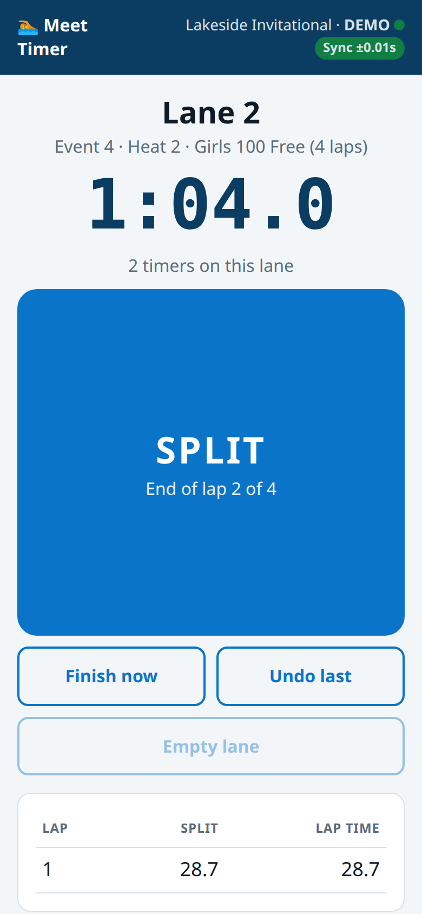
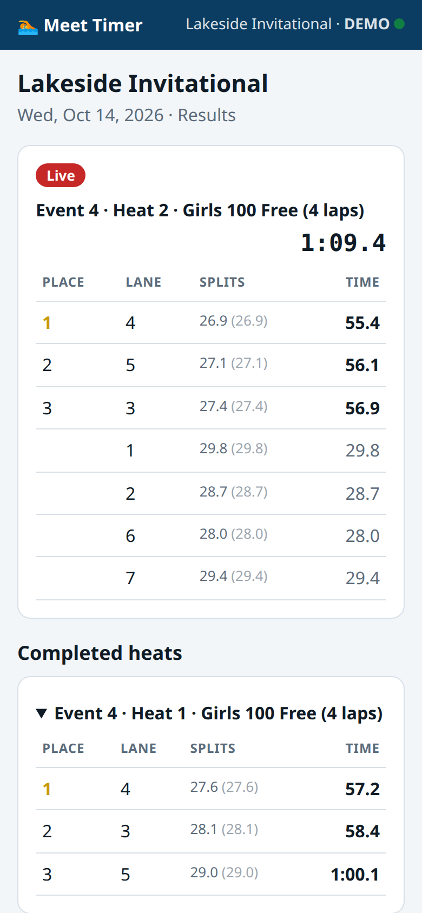

Three roles. One meet code.
Everyone joins the same meet from their own phone and picks a job. Times flow to the scoreboard the moment they're tapped.

Starter
Tap the stroke, distance, and gender, then tap START at the signal. Event and heat numbers fill in on their own.

Lane timers
Each timer picks a lane and taps one big button at every wall. It turns into FINISH on the last lap. Up to three timers per lane.

Scoreboard & results
Put the scoreboard on a TV for the crowd. Coaches and parents follow every heat, with places and splits, on their phones.
Built for a real pool deck.
Volunteers can learn it in a minute. It's accurate enough to trust the results.
Lag-proof timing
Phones sync to the server clock, and each tap is time-stamped on the phone when it happens. A slow pool Wi-Fi network won't change anyone's time.
USA Swimming rules
With three timers the middle time is official, with two it's the average, and with one it's that time. Places are ranked on hand times to tenths.
Live TV scoreboard
A full-screen 16:9 display with the running clock, laps, splits, and medals. Final results stay up until the next start.
Nothing to install
It runs in the browser. Volunteers join by scanning the meet's QR code or typing its 4-letter code.
Sync you can see
A green, amber, or red badge on every phone shows how well it's synced. Tap it to re-sync.
Recover from mistakes
Recall a false start, undo a stray tap, or mark a lane empty. The starter moves to the next heat or event with one tap.
From splash to scoreboard in seconds.
When the last swimmer touches, the results are already done.
- Every split, every laneLap times and cumulative splits are saved for every swimmer, every heat.
- Ties handled correctlyEqual times to the tenth share a place.
- Whole-meet historyCompleted heats stay in the results, so you can look one up later.
- Any poolYards or meters, 1–12 lanes, Boys/Girls, Men/Women, or open events.
Ready for your next meet?
Create a meet, share the code with your volunteers, and you're timing in under a minute.
Launch the timer